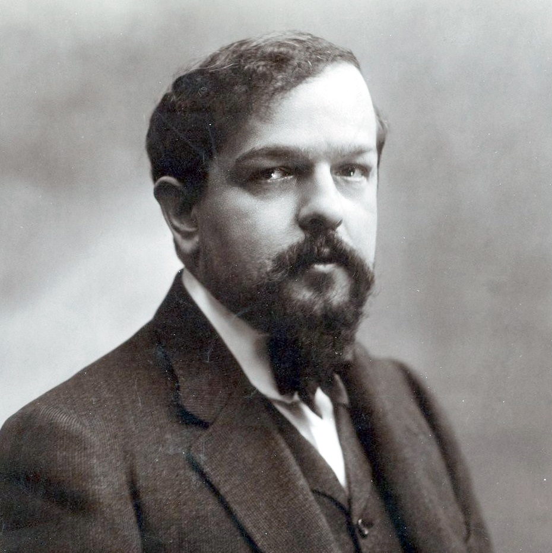
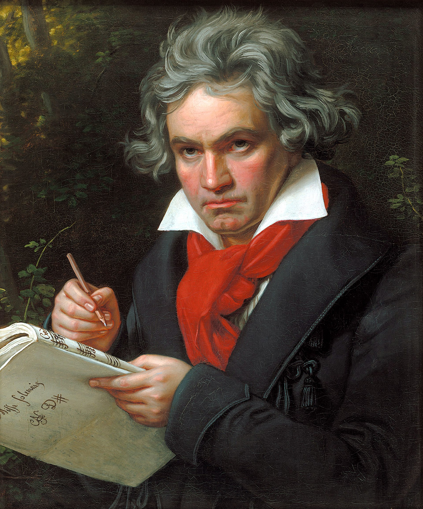

Arabesque
Claude Debussy
Although quite an early work, the arabesques contain hints of Debussy's developing musical style. The suite is one of the very early impressionistic pieces of music, following the French visual art form.
Maple Leaf Rag
Scott Joplin
An early ragtime musical composition for piano composed by Scott Joplin. It was one of Joplin's early works, and became the model for ragtime compositions by subsequent composers. It is one of the most famous of all ragtime pieces. As a result Joplin was called the "King of Ragtime".

Moonlight Sonata
Ludwig Beethoven
The piece is one of Beethoven's most popular compositions for the piano, and it was a popular favorite even in his own day. Beethoven wrote the Moonlight Sonata in his early thirties, after he had finished with some commissioned work; there is no evidence that he was commissioned to write this sonata.
The Lark
Mikhail Glinka
Glinka was the first Russian composer to gain wide recognition within his own country, and is often regarded as the fountainhead of Russian classical music.
Turkish March
Amadeus Mozart
The Turkish March (Marcia alla turca) is a well-known classical march theme by Ludwig van Beethoven. It was written in the Turkish style popular in music of the time.

Prelude
Sergei Rachmoninoff
Prelude in C♯ minor (Russian: Прелюдия), is one of the composer's most famous compositions. It is also known as The Bells of Moscow since the introduction seems to reproduce the Kremlin's most solemn carillon chimes.